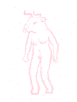

cave
the dark brick walls of the tunnel curl up and over your head like a back-alley in a non-euclidean universe. the lantern is enough to illuminate a few meters ahead and behind you, stretching shadows across the tubular surface that melt into the unlit distance. upon the brick, as high as hands can reach, layers of words, pictures, symbols, sprayed in color or hand-brushed white, clamoring for attention like a crowd of paparazzi.
as you delve deeper into the tunnels, the technicolor tags become less frequent, leaving only the crude pale calligraphy behind like the skeleton of a fish.
fleeto
FucK THE POLiS
glue is for cunts
COLIN
“i appreciate the way that people will invariably just start drawing on the walls when they’re presented with anything resembling a cave” she says. “it feels like a fundamental part of the human spirit”
“the jungian archetype of the cave painter”
“yeah, and like, the stuff ppl write is always kinda timeless too. what if there was tarot except instead of the daddy issues card or whatever they had cards for like, guy who writes his name on everything, guy with strong opinions about recreational drugs–”
“this is actually the origin of the phrase ‘fuck 12’, it’s from the old scots tarot card XII: THE POLiS”
“heeheehee yes, it’s true”
a little further down, you come across a section of wall with no markings on it. she sets down her bag and takes out a can of pink spray paint, shaking it with a dull metallic rattle.
“but yeah idk, i do kinda believe in something vaguely adjacent to jungian archetypes or something, i just feel like his vision of them is completely clouded by status quo social structures and psychiatr-uh-psychoanalytical bullshit”
“what do you mean?”
“umm, i’ll give you an example. so, there’s this carving they found in germany, from like, thirty thousand years ago, called the löwenmensch. it’s made out of ivory, and it’s just a little sculpture of a humanoid figure with a lion’s head”
“oh i think i’ve maybe heard about this”
“yeah it’s pretty famous, there’s a bunch of boring cisgender debates about whether what genitals it has, it’s a whole thing” she removes the cap from the spray can and begins to mark up the wall as she rambles. “but what’s interesting is that like, it’s one of the oldest bits of art that we have, right, and it’s doing this hybrid human-animal thing. and you might think i’m gona talk about parallels with furries or catgirls but i think there’s more universal examples than that, like, it’s an extremely common metaphorical touchstone across cultures to refer to people as animalistic like oxen or bears or foxes, or for myths and folklore to feature hybrid animal-people, or for kids to imagine themselves as animals. i just think it’s notable that people consistently look at creatures and think ‘damn it’d be cool to be one of those’”
she steps back. on the wall in front of you is a tall, scruffy figure, with the body of a woman, and the head of a bull, with a ring through her nose and each of her nipples. “your turn” she says, handing you the spray can in one hand and the lamp in the other.
